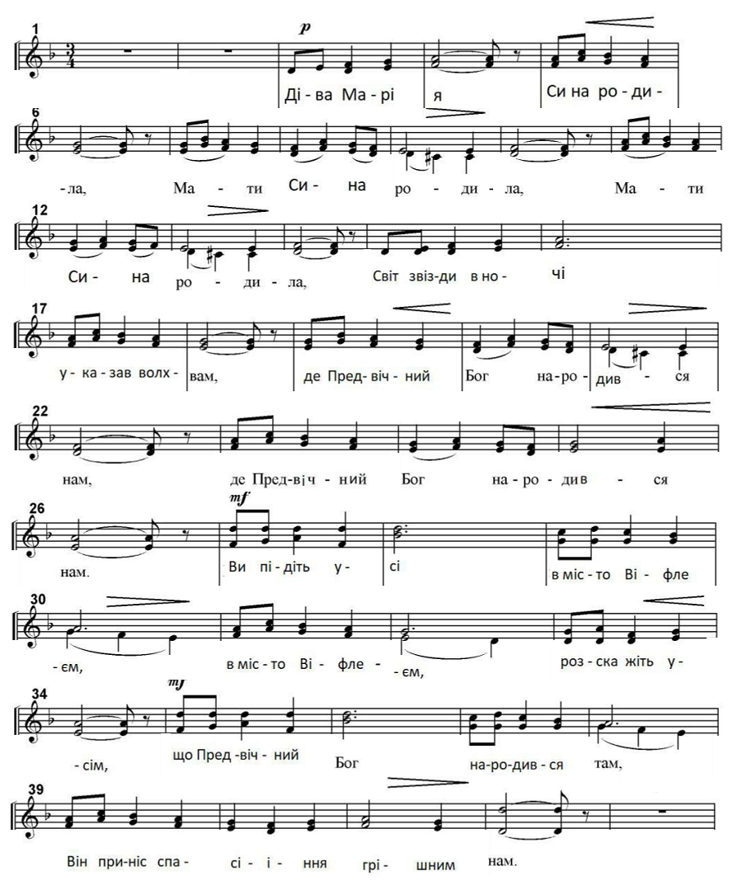

Діва Марія
А.Вісков

Діва Марія Сина родила,
Мати Сина родила,
Мати Сина родила.
Світ звізди вночі указав волхвам,
Де предвічний Бог народився нам,
Де предвічний Бог народився нам.
Ви підіть усі в місто Віфлеєм,
В місто Віфлеєм розкажіть усім.
Що предвічний Бог народився там,
Він приніс спасіння грішним нам.
Діва Марія Сина родила,
Мати Сина родила,
Мати Сина родила.
* * * * *